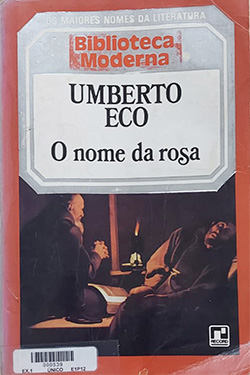

O nome da Rosa - Umberto Eco
Sobre o livro:
É impossível pensar em O nome da rosa sem considerar seu extraordinário sucesso global, tanto para a crítica quanto para o público. Trata-se de um desses raros fenômenos editoriais, um best-seller literário que transcende as fronteiras linguísticas. Este é o primeiro romance de Umberto Eco, um dos mais importantes teóricos da comunicação de massa na atualidade. O autor utiliza um roteiro policial, no estilo de Conan Doyle, que se desenvolve na última semana de novembro de 1327, em um mosteiro franciscano da Itália medieval. Neste mosteiro, paira a suspeita de heresia, e para a investigação, é enviado o frei Guilherme de Baskerville. Porém a delicada missão é interrompida por sete excêntricos assassinatos. A morte, em circunstâncias insólitas, de sete monges em sete dias e noites guia uma narrativa violenta, que encanta pelo seu caráter de humor e crueldade, malícia e sedição erótica. Esses crimes fazem frei Guilherme atuar como um detetive. Ele busca prova, decifra símbolos secretos e manuscritos em códigos e trabalha arduamente no misterioso labirinto do mosteiro onde eventos extraordinários ocorrem durante a madrugada. Um espetacular sucesso, O nome da rosa não é apenas uma narrativa de investigação de crimes, mas também uma fascinante crônica sobre a Idade Média.
Imagens:
Onde Encontrar?
Estante 01, Prateleira 02, Seção E
Código do Livro
539
Outras informações:
- Número de páginas: 562 ;
- Autor: Umberto Eco (1932-2016);
- Editora: